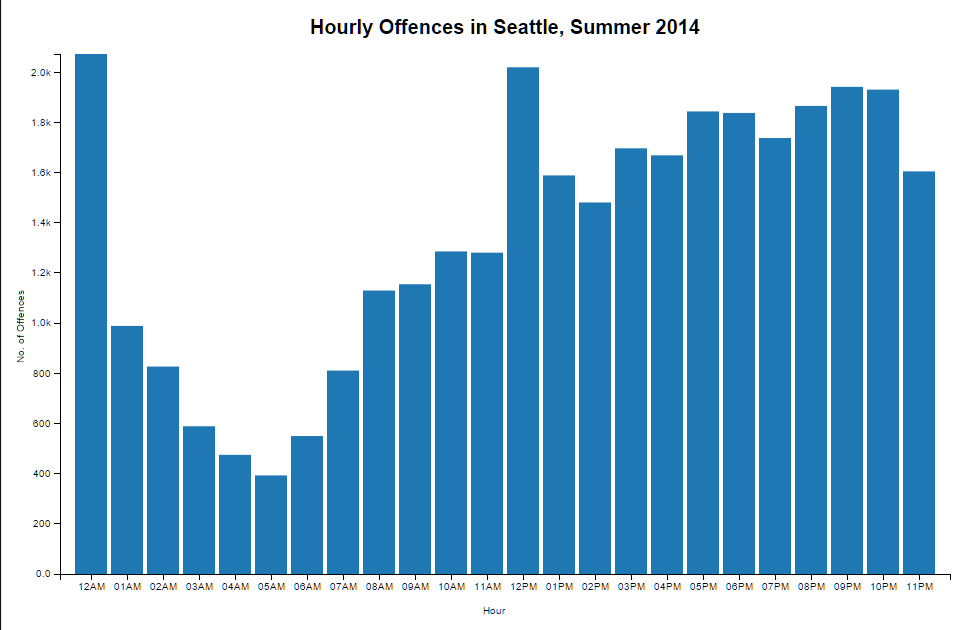
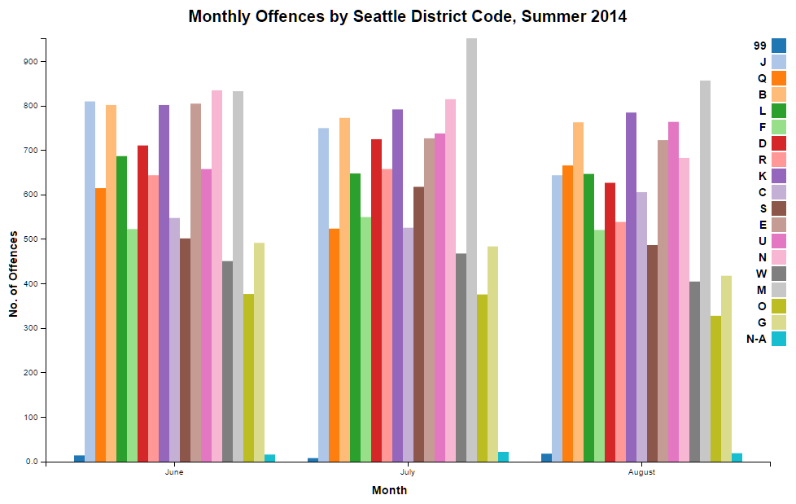

This study examines crime rates in Seattle over the period June to August, 2014, with a view to assessing how offence rates may vary by time of day and district. The first graph below shows the total number of offences (across all districts) committed by estimated hour of day. It is clear from this that crime increases steadily through the day, peaking in the late evening, and then diminishes rapidly after midnight.
In the second graph below, we look at crime rates by district, and group them further by month to assess whether there are any intra-district trends evident as the summer progresses. Small variations are apparent across the three months, but nothing to suggest any strong trends, which is not unexpected. It can be seen that certain districts have consistently -- and significantly -- higher offence rates then others, though without additional data on relative district area or population, per capita rates or other inferences can't be drawn.
Lastly, the graph below normalises and stacks relative rates for each district by hour of day. It can be seen here that would appear to be a relative shift of crime to certain areas late at night. For example, District 'E', more than doubles its proportion of offences between 11pm and 2am, which could imply that it is a nightlife area, which may cause an uptick of alcohol or drug-related crime at night. Further data mapping offence codes to labels could corroborate this.